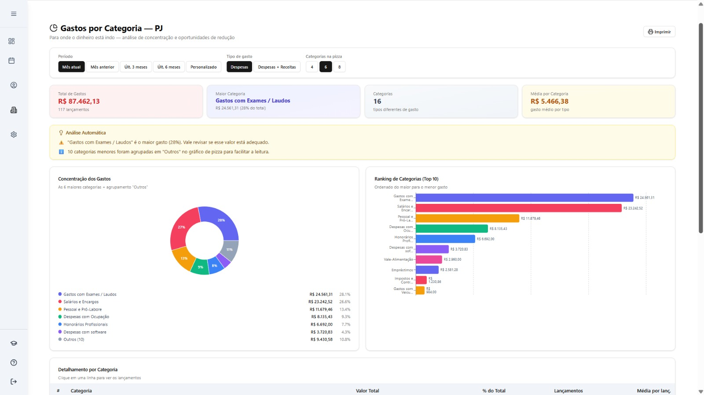
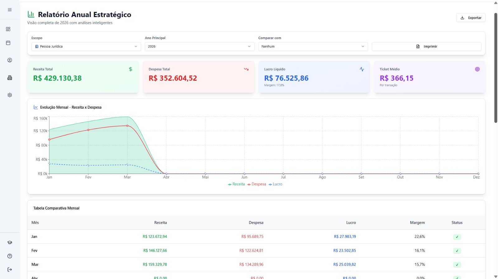

Veja todas as entradas e saídas organizadas em um só lugar.
Saiba exatamente onde cortar custos e aumentar lucro.
Pare de depender de Excel bagunçado e dados desencontrados.
Entenda sua empresa como um gestor, não como um apagador de incêndio.
